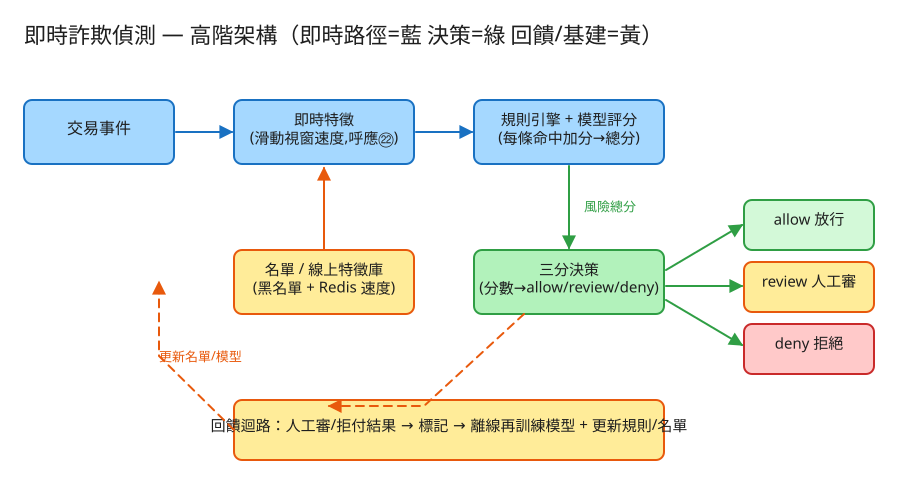

D 串流計算/儲存分發 建議 45 分鐘 Design a Fraud Detection System
㉒ 廣告點擊聚合同源——都靠同鍵滑動視窗計數當核心特徵；差別在這題不是計費，而是對每一筆交易在毫秒內做出 allow / review / deny 的線上決策，
難點在低延遲、低誤殺、規則可解釋與模型準度的權衡，以及特徵新鮮度。
allow（放行）/ review（送人工審查）/ deny（拒絕）。| 指標 | 假設 | 推算 |
|---|---|---|
| 交易量 | 2 億筆/日 | ~2.3k TPS（峰值 ×4 ≈ 9k TPS） |
| 延遲預算 | 授權路徑分配給風控 | p99 < 50~100ms（含特徵查詢 + 評分） |
| 規則數 | 線上規則 | 數十~數百條，每筆評估全跑（O(規則數)，須夠快） |
| 線上特徵 | 每卡/IP 維護近 N 分鐘計數 | Redis keyed-state，數億鍵，設 TTL 自動淘汰 |
| 命中率 | deny+review 佔比 | 通常 < 1~3%，但誤殺成本高 → 門檻保守 |
| 標籤回饋 | chargeback 延遲 | 數天~數十天才確認，模型只能用「成熟」標籤再訓練 |
# 評估一筆交易（同步、關鍵路徑、超低延遲）
POST /api/v1/evaluate
Body: { "txn_id":"t1","card_id":"c_123","ip":"1.2.3.4","device":"d_9",
"amount":1280,"merchant":"m_5","ts":1717200000 }
→ 200 { "decision":"review", "score":62,
"triggered":[{"rule":"velocity_card","score":40},{"rule":"model","score":22}] }
# 回饋標記（人工審/拒付結果回標 → 進再訓練資料）
POST /api/v1/feedback Body: { "txn_id":"t1","label":"fraud|legit","source":"chargeback|analyst" }
# 規則 / 門檻熱更新（不重啟服務）
POST /api/v1/config Body: { "velocity_card_max":3,"review_at":50,"deny_at":90 }
# 名單維護
POST /api/v1/blacklist Body: { "value":"c_evil","type":"card|ip|device" }
# 查某交易的決策軌跡（可解釋 / 申訴）
GET /api/v1/decisions/{txn_id} → { score, triggered:[...], features:{...} }
transactions（交易明細，append-only 高頻寫 → 走串流/列式庫）
txn_id PK, card_id, ip, device, merchant, amount, ts, decision, score
rules（規則定義，可熱更新）
rule_id PK, type(velocity_card/velocity_ip/amount/blacklist/model),
params JSONB(window_sec, threshold, ...), weight, enabled
velocity_counters（即時線上特徵 → Redis keyed-state，設 TTL）
key("card:"+card_id 或 "ip:"+ip) → 近 N 分鐘交易時間戳序列 / 計數
lists（黑/白名單）
value, type(card/ip/device), reason, expires_at
decisions（決策軌跡，可解釋 + 回饋關聯）
txn_id, score, triggered JSONB, decision, model_version, ts
labels（回饋標籤，再訓練用）
txn_id, label(fraud/legit), source(chargeback/analyst), labeled_at
✏️ 用 Excalidraw 開啟編輯（diagram.excalidraw）交易 ──▶ 即時特徵（串流聚合：同卡/同IP 滑動視窗速度，呼應㉒）
│
▼
規則引擎 + 模型評分（每條命中加分 → 風險總分）
│
▼
三分決策：score < reviewAt → allow
reviewAt~denyAt → review（人工審查佇列）
score ≥ denyAt → deny（拒絕 / 退回）
│
▼
回饋標記（審查/拒付結果）──▶ 離線再訓練模型 + 更新規則/名單㉒ 廣告聚合的同 IP 洪水偵測的同一套滑動視窗，差別在這裡把它當成可加權的特徵而非二元剔除。review_at、deny_at 把連續的風險分切成三段。| 瓶頸 | 對策 |
|---|---|
| 每筆都要查即時特徵（讀放大） | 線上特徵庫用 Redis/keyed-state，依 key（card/ip）分片；批量讀、近資料就近快取 |
| 規則數多、每筆全跑 | 規則分層（先跑便宜規則早退）、編譯成決策表、無狀態服務水平擴展 |
| 模型推論延遲 | 輕量線上模型（GBDT）、特徵預算、批次/向量化推論、推論服務獨立擴展 |
| 特徵新鮮度 vs 一致性 | 同 key 路由到同分片，保證「剛剛那筆」先寫後讀；跨分片用近似 |
| 模型更新 | 影子模式（shadow）/灰度上線、版本化決策軌跡、可快速回滾 |
| 服務不可用 | 定義 fail-open（放行保營收，風險上升）或 fail-close（保守擋，傷體驗） |
本題 demo 著重於線上決策核心邏輯（也是高 TPS 下真正的考點），可實際用 PHP 內建伺服器跑起來：
src/SlidingWindow.php 每個鍵（卡/IP）維護最近交易時間戳，回傳視窗內筆數＝速度特徵（與 ㉒ 同源）。src/RuleEngine.php 多條規則（速度/金額/黑名單/模型示意）命中加分 → 風險總分 → 三分決策；門檻可即時調。public/index.php 路由：評估交易 / 看狀態 / 調設定 / 清空，並附深色測試頁。# 啟動
cd demo
php -S localhost:8059 -t public
# 瀏覽器開 http://localhost:8059
# 先送正常交易（多半 allow）→ 同卡短時間連送多筆觸發速度規則（review/deny）→ 調門檻看決策變化model 規則的「模型風險分」為加權示意（金額/速度越高分越高），並非真正訓練出的 ML 模型。Kafka / Flink / 線上模型服務 / 特徵庫等分散式基建以單機 JSON 檔示意。